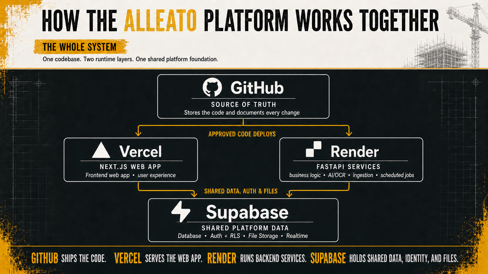
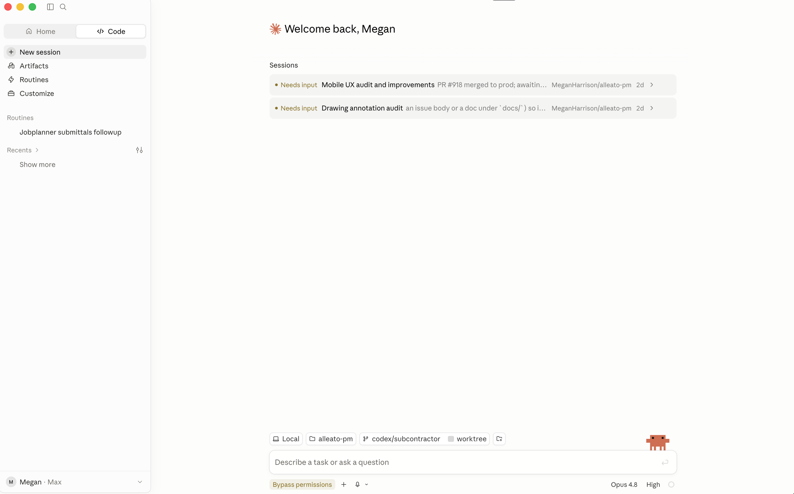

Owner’s Guide
How the Codebase Works
A simple guide to GitHub, Vercel, Render, and Supabase, plus how to use Claude Code to make changes.

What each platform controls
The same system, with direct links and plain-English detail.
Select any platform to open the Alleato account page in a new tab.
GitHubSource of truth and codebase homeStores the application code, documents every change, supports pull-request review, and provides a reliable history of the product.
Open repository ↗
approved code deploys
VercelFrontend and user-facing applicationHosts the pages, forms, tables, navigation, preview deployments, and the production website people use in their browser.
Open project ↗
RenderBackend functionalityRuns integrations, scheduled jobs, document processing, OCR, data syncing, and other work behind the application.
Open service ↗
reads and writes data
SupabaseDatabaseStores project records, financial data, users, permissions, uploaded files, and the data used by search and AI features.
Open database ↗
Platform names and logos are trademarks of their respective owners. Vercel and its design marks are trademarks of Vercel, Inc. or its affiliates.
Claude Code Desktop
Describe the result. Let Claude inspect the project before it changes anything.
Start a Code session, select where the project lives, then describe the outcome you want. You remain the approver.

1
Start a Code sessionOpen Code, then select New session.
2
Select the projectCloud: choose the GitHub repository. Local: choose the folder containing the code.
3
Confirm the locationCheck the repository or folder and the active branch shown above the prompt.
4
Describe the outcomeSay what should change, who it helps, and what success looks like.
5
Review and testInspect Claude’s plan, the changed files, screenshots, and test results.
6
Create the GitHub changeCommit, push, and open a pull request when the work is ready.
A useful prompt formula“For [type of user], improve [specific workflow] so they can [business outcome]. First inspect the existing implementation and project rules. Show me your plan, test the real workflow, and report what changed, what passed, what remains, and any risks.”
Claude Code Desktop availability and workflow verified against Anthropic Help Center documentation, July 2026.